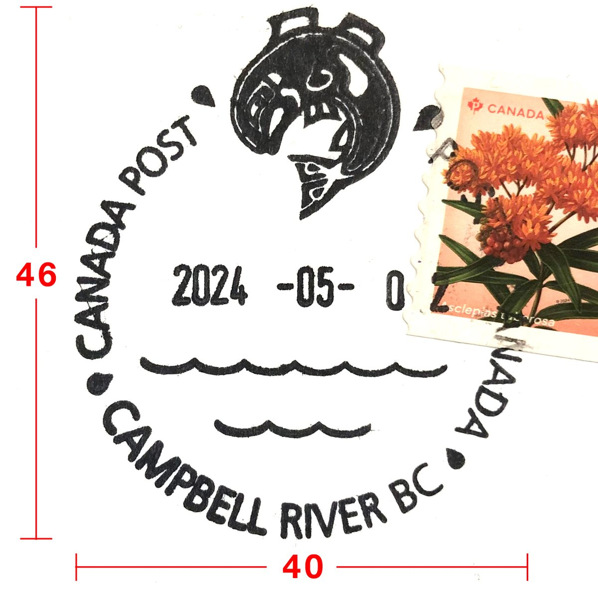

Campbell River STN A pictorial cancel
First Nation
- Status
- Active
- Run dates
- ? to present
- Design
- first Nation; fish; wave
- Ink colour
- Black
- Designer
- Unknown
- Post office
- Campbell River STN A
1090 Ironwood St
Campbell River, BC
V9W 5P7 - Subjects
- first nation, fish, water, waves
Collect it by mail. Send your stamped covers, with a stamped return envelope, to the post office address above. How to collect pictorial cancels by mail · en français
 Tofino POSun, clouds, beach, waves, trees, surfers
Tofino POSun, clouds, beach, waves, trees, surfers Lantzville POEagle on a tree trunk
Lantzville POEagle on a tree trunk Bamfield POTHE ALL-RED LINE AROUND THE WORLD / LA LIGNE ROUGE AUTOUR DU MONDE
Bamfield POTHE ALL-RED LINE AROUND THE WORLD / LA LIGNE ROUGE AUTOUR DU MONDE Squamish POEagle, mountain
Squamish POEagle, mountain Whistler POSARA BURKE
Whistler POSARA BURKE Vancouver Main Retail Store POHaunted Canada
Vancouver Main Retail Store POHaunted Canada